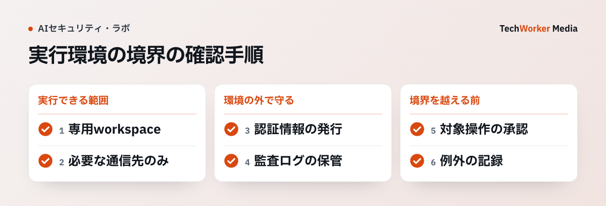

コード生成AIにコマンドを実行させるときは、作業フォルダの外への書き込みだけでなく、外部への通信や認証情報へのアクセスも確認が必要です。OpenAIのCodex運用例を手がかりに、AIが動ける範囲をどう区切るかを説明します。
一次資料：OpenAIが示す、実行環境の境界（2026年5月8日、確認：2026年10月6日）
The sandbox defines the technical execution boundary.
出典：OpenAI, Running Codex safely at OpenAI。ここでいうサンドボックスは、プログラムが実行できる範囲を技術的に区切る仕組みです。人による承認の手順とは分けて設計します。

OpenAIの実例は実行境界と記録を分けている
OpenAIの社内運用例では、サンドボックス、承認規則、通信規則、認証情報保管、稼働記録を別々に設定しています。ここで大事なのは、サンドボックスという一語に全部を押し込まないことです。
基本ソフト（OS）が書込みを止めても、許可された通信へ秘密を送れれば被害は残ります。通信を閉じても、作業領域外の認証情報を読めれば同じです。境界ごとに拒否条件を持たせます。
作業領域・通信・認証情報を別の境界にする
ファイル領域は、作業用フォルダーだけを書込み可にします。リポジトリの設定や認証情報の保管場所は読取りも必要最小限にし、成果物の保存先を明示します。実行処理と子処理へ同じ制約が引き継がれることも確認します。
利用者情報は、個人の普段使い認証情報を直接渡しません。作業専用の短命認証情報を発行し、対象資源と権限範囲を固定します。利用後は失効させ、誰の指示で使われたかを記録へ残します。
URL取得ツールはSSRFを前提に閉じる
許可するのは「インターネット」ではなく、必要なドメインと通信方法です。パッケージ取得ならレジストリ、API更新なら対象APIに限ります。転送後の宛先、DNS再解決、IP直打ちも同じ規則で検査します。
URL取得ツールでは、通信方式をHTTPSへ限定し、自端末宛て、リンクローカル、内部通信、クラウドのメタデータ接続先を拒否します。最初のURLだけでなく転送ごとに名前解決後のIPを再検査し、DNS rebinding（名前解決先のすり替え）で内部へ切り替わる経路を閉じます。応答容量、時間切れ、転送回数も固定します。
Webhook（外部通知）は署名確認と重複排除を分ける
受信本文は加工前のバイト列のまま署名を検証します。GitHubは、署名の比較に通常の等価演算子を使わず、一定時間で比較する関数を使うよう案内しています。署名が正しくても再送は起こるため、X-GitHub-Deliveryなど送信元が付ける配信識別子を保存し、同じ業務更新を二度実行しないようにします。
送信元が署名対象の時刻を提供する場合は、現在時刻との差が許容幅内かも検査します。検証可能な時刻がない場合は、受信時刻と配信識別子の保持期間で再生を受け付ける範囲を限定します。署名、鮮度、イベント種別、動作種別、重複の検査がすべて終わるまで、キュー投入や業務更新を行いません。
検査を通った通知だけをキューへ渡し、受信から10秒以内に応答します。再送時も同じ配信識別子が使われます。到着順に依存する更新では本文中の時刻や版番号を比較して、古い通知が新しい状態を上書きしないようにします。
失敗時の挙動まで試験する
作業領域外への書込み、禁止ドメインへの接続、認証情報ファイルの読取り、承認なしの外部更新を試します。期待する結果は「警告が出る」ではなく、処理が失敗し、対象と理由が記録に残ることです。
許可を追加したら同じ試験をやり直します。例外が増えた結果、元の境界が消えていないかを確かめるためです。